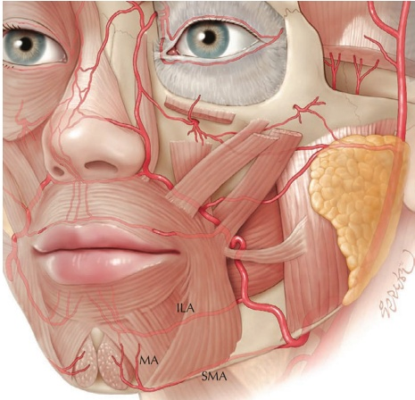
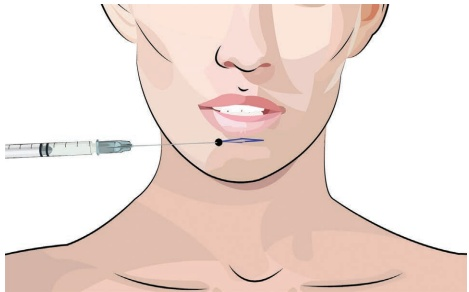
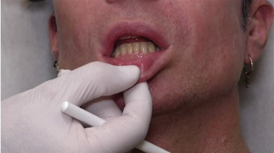
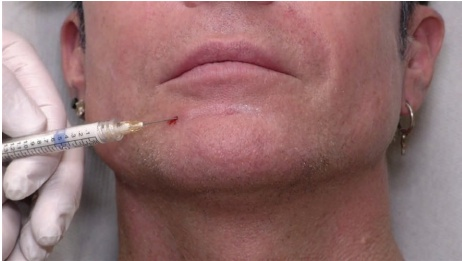
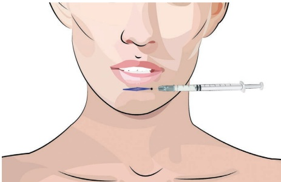
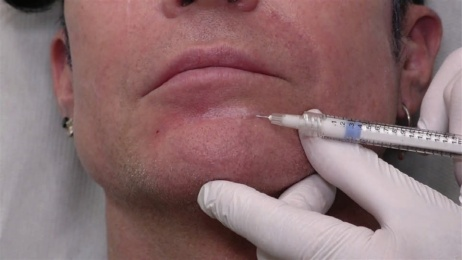

24 面部下三分之一：颏皱
下部面部颏沟
24.1 引言
颏沟是下唇和颏肌之间的水平皱纹。它具有动态和静态两个组成部分。
24.2 解剖学危险点
下唇动脉深层走行于该区域，尽管并非所有患者都有，因为该动脉可能存在盘绕或分支至皮下层次。如果羟基磷灰石钙（CaHA）注射过深，可能会在下唇黏膜处看到可见的黄色沉积物。同时要注意颏部和颏动脉（图 24.1）。
24.3.1 分步技术
24.3 套管针技术
关于注射定位，参见图 24.2。
- 考虑在颏沟外侧皮肤进行局部麻醉。

图 24.1 颏沟治疗的动脉危险区：下唇动脉（ILA）、颏部动脉（SMA）和颏动脉（MA）。
-
使用 23G 针消毒并预刺一个小孔。
-
使用未稀释的 CaHA 和 25G、38 mm 的套管针，或使用标准稀释度的 CaHA。
-
用非惯用手拉伸皮肤，以保持浅层，沿颏沟将套管针推进至皮下层次。
-
确保套管针不接触口腔黏膜，以避免黏膜注射（图 24.3）。
-
注射多个逆行线性丝，每根 0.05–0.1 mL（图 24.4）。
-
重复操作对侧。

图 24.2 颏沟产品注射。蓝色线条代表皮下逆行线性丝。

图 24.3 检查以避免套管针置入口腔黏膜。

图 24.4 使用钝性套管针的退行线性丝。可使用指间进行内侧引导注射。

图 24.5 使用锐针在颏沟进行产品注射。蓝色线条代表深层真皮或皮下退行线性丝。
- 修整以使产品均匀平滑。
24.4 锐针技术
有关注射定位，参见图 24.5。
24.4.1 分步技术
-
使用未稀释的 CaHA 或标准稀释的 CaHA 和 27G 或 28G 锐针。
-
选择颏沟外侧限为入点。
-
插入锐针并保持浅层：在深层真皮水平或皮下水平。

图 24.6 使用锐针的退行线性丝。
-
避免将锐针推进至粘膜下，因为此时产品可能可见。
-
以紧密的扇形（图 24.6）注射多个退行线性丝。
-
修整以使产品均匀平滑。
24.5 术后护理
如有必要，可手动按摩该区域以使产品均匀平滑。该区域可能会肿胀一到两天。有时患者可能会报告用舌头触及到可触及的产品或有产品存在的感觉。按摩有助于减轻可触及性。如果产品放置过深，它可能会在口腔黏膜中可见。建议使用 18G 锐针切开后将产品挤出。
24.6 实现最佳效果的附加治疗
由于颏沟具有动态成分，注射肉毒毒素到颏肌可以改善效果。它还有助于防止产品移位，特别是在注射 CaHA 之前进行注射时。